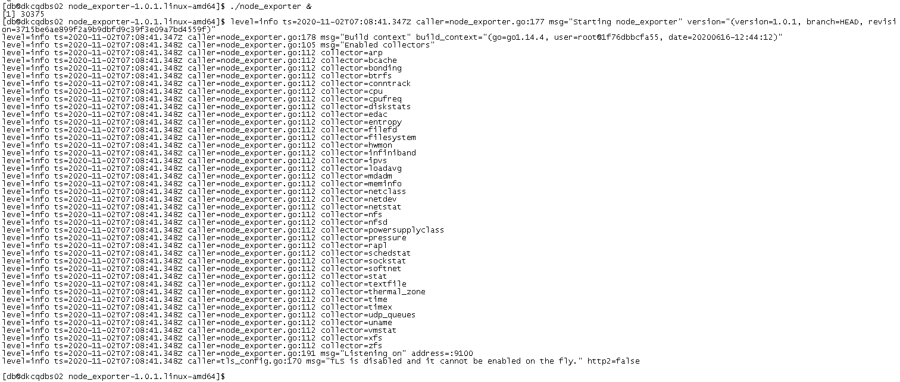
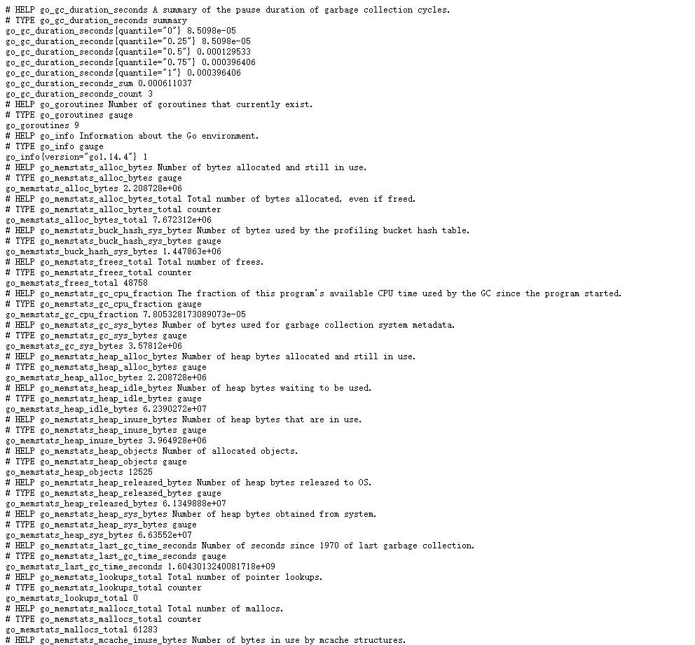
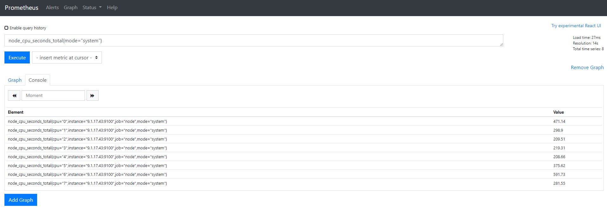
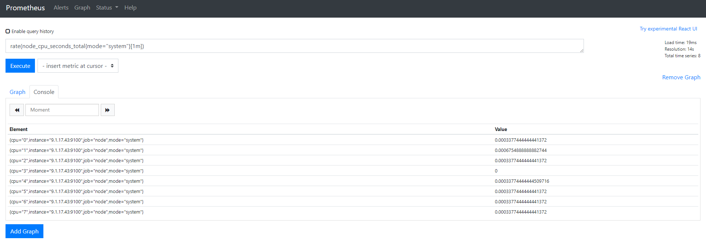
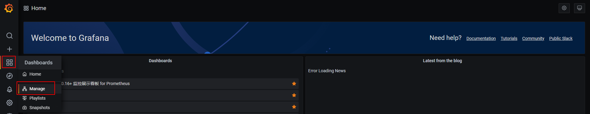
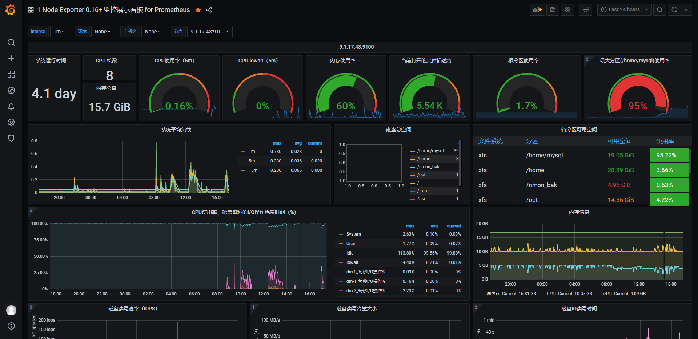

Prometheus监控Linux主机
首先在Linux系统上安装一个探测器node explorer, 下载地址https://prometheus.io/docs/guides/node-exporter/
下载压缩包，并解压：
tar -zxvf node_exporter-1.0.1.linux-amd64.tar.gz
这个探测器会定期将linux系统的各项硬件指标和内核参数通过9100端口和url metrics暴露给外部。
#后台执行node_exporter
./node_exporter &

添加服务为系统服务：
# vim /usr/lib/systemd/system/node_exporter.service
[Unit]
Description=node_exporter
After=network.target
[Service]
Type=simple
User=prometheus
ExecStart=/usr/local/prometheus/node_exporter/node_exporter
Restart=on-failure
[Install]
WantedBy=multi-user.target
启动
#添加为开机自启
# systemctl enable node_exporter.service
#启动服务
# systemctl start node_exporter.service
浏览器里输入ip:9100/metrics，可以看到node explorer收集到的各项参数信息，则表示运行成功。

在Prometheus安装目录的prometheus.yml文件里定义一个job，指向Linux系统上运行的node explorer:
- job_name: 'node'
file_sd_configs:
- files: ['./node/node.yml']
refresh_interval: 5s
在同级目录下新建一个node文件夹，创建node.yml文件。 内容为：
- targets:
- 9.1.17.43:9100
或者直接添加如下内容：
# vim /usr/local/prometheus/prometheus.yml
scrape_configs:
- job_name: 'linux'
static_configs:
- targets: ['10.10.10.1:9100']
重启Prometheus，打开下面的url： http://PrometheusServerIP:9090/ 输入node_cpu_seconds_total{mode="system"}，查询该服务器上所有CPU工作在系统态消耗的时间：

还可以指定时间窗口，只查询过去1分钟之内的CPU运行数据： rate(node_cpu_seconds_total{mode="system"}[1m])

添加对应的模板，显示监控信息。 Linux监控模板node-exporter_rev5.json


如果联网的话，直接输入dashboards的id，也可以添加。
添加dashboards
点击Create - Import，输入dashboards的id（推荐1860）